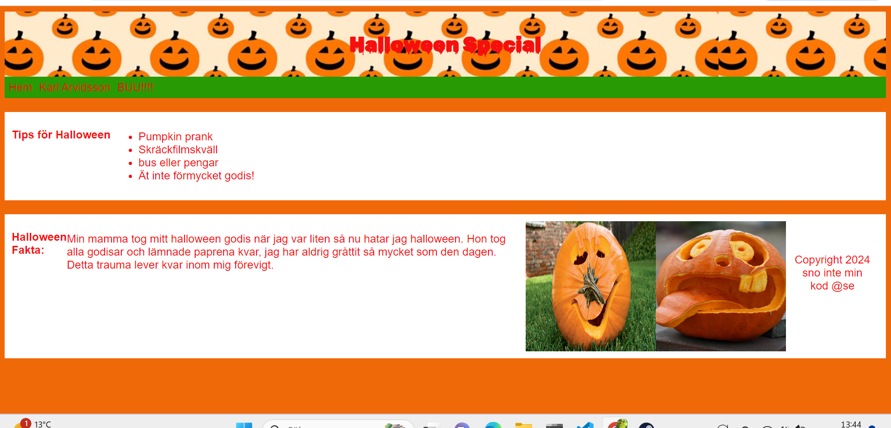
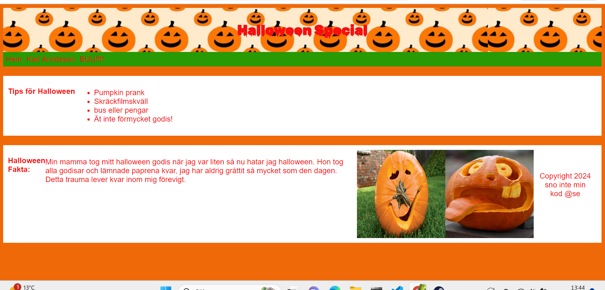
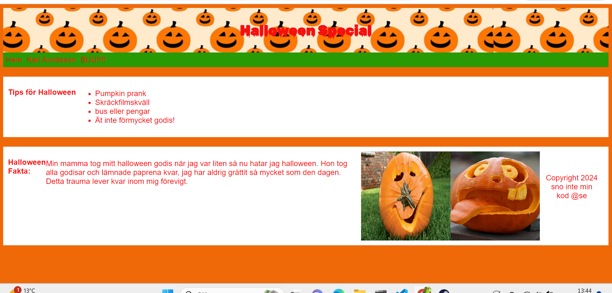
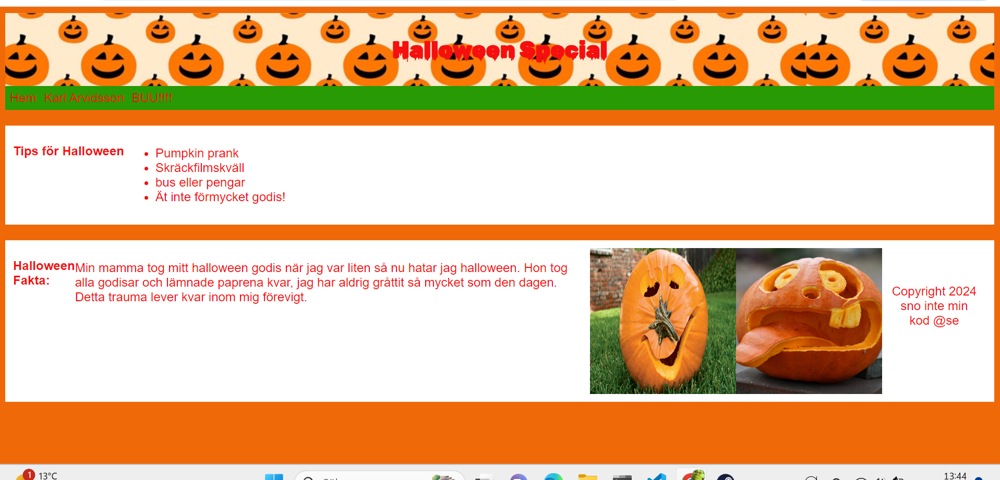
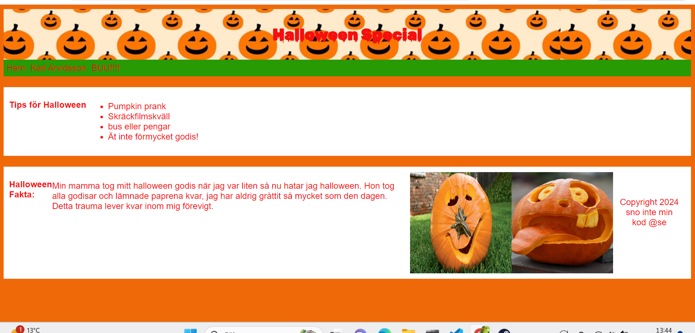

Banana ducktape
Home
Lägg ett bud gällande bud är 1200000kr
Ett av de mest uppmärksammade konstverken i modern tid är Comedian av Maurizio Cattelan. Verket består av en enkel banan som är fäst vid en vägg med en bit silvertejp. Detta provocerande och humoristiska konstverk utmanar traditionella föreställningar om konst och dess värde. Bananen symboliserar det vardagliga, medan silvertejpen antyder en tillfällig och förgänglig natur. Verket har blivit föremål för intensiva diskussioner om konstvärldens kommersialisering, särskilt när det såldes för över 100 000 dollar. Med sin blandning av enkelhet och konceptuell tyngd framstår det som både absurd och genialt, vilket gör det till en symbol för samtida konstdebatt.


 


